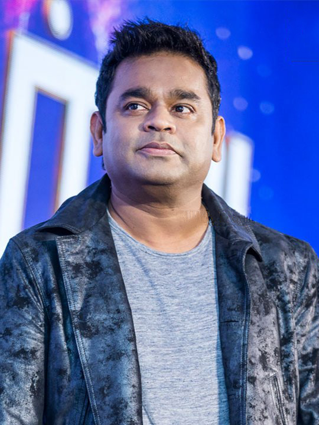

List of Songs
Music Director: A.R Rahman
- Jai Ho
From Slumdog Millionaire (2008), the Oscar-winning anthem that brought Rahman global fame.
- Kun Faya Kun
From Rockstar (2011), a soulful sufi fusion loved for its spirituality and depth.
- Tum Tak
From Raanjhanaa (2013), a lively track blending romance with Rahman’s melodic flair.
- Vande Mataram
From his 1997 album *Vande Mataram*, a patriotic song that remains iconic in Indian music history.
- Nadaan Parindey
Also from Rockstar (2011), a powerful song with poetic lyrics and strong vocals.

Music Director: Anirudh Ravichander
- Why This Kolaveri Di
From 3 (2011). Anirudh's breakout viral sensation sung by Dhanush and composed by him.
- Vaathi Coming
From Master (2021). A mass hit composed and sung by Anirudh himself.
- Don’u Don’u Don’u
From Maari (2015). A funky romantic duet composed by Anirudh and sung with Alisha Thomas.
- Arabic Kuthu (Halamithi Habibo)
From Beast (2022). A massive chartbuster composed by Anirudh, vocals by him and Jonita Gandhi.
- Hukum – Thalaivar Alappara
From Jailer (2023). A fan-favorite mass entry track composed and partly sung by Anirudh.